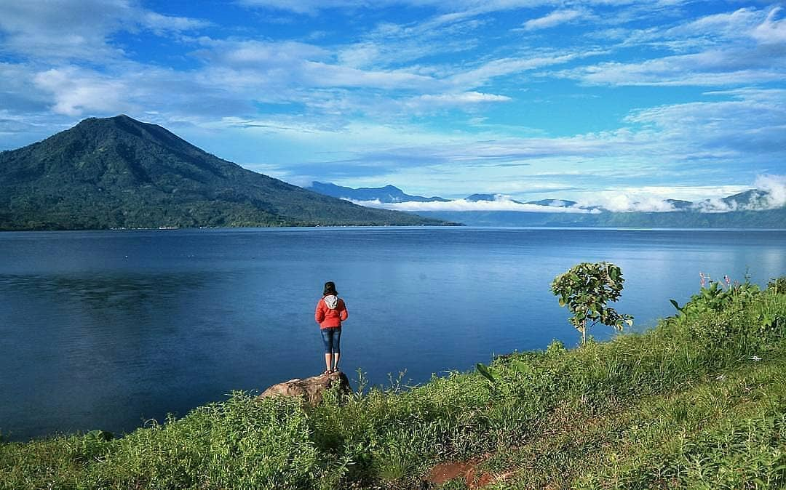
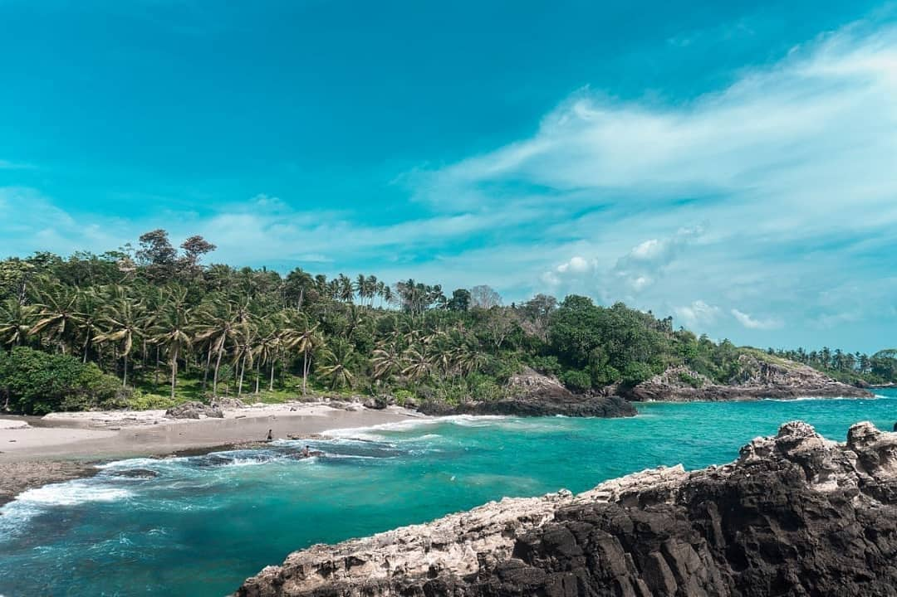
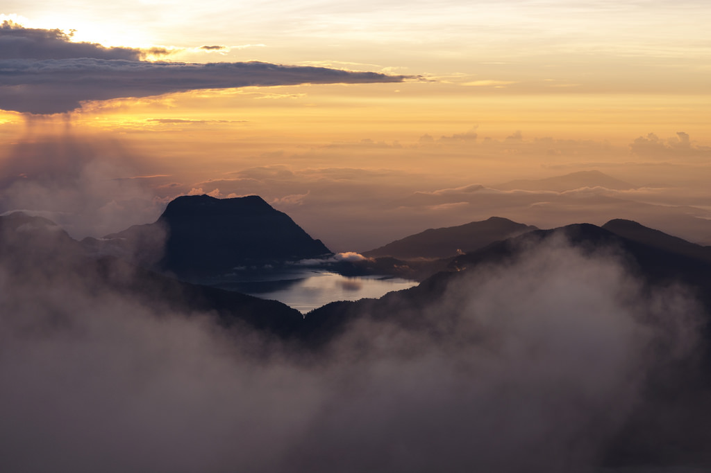
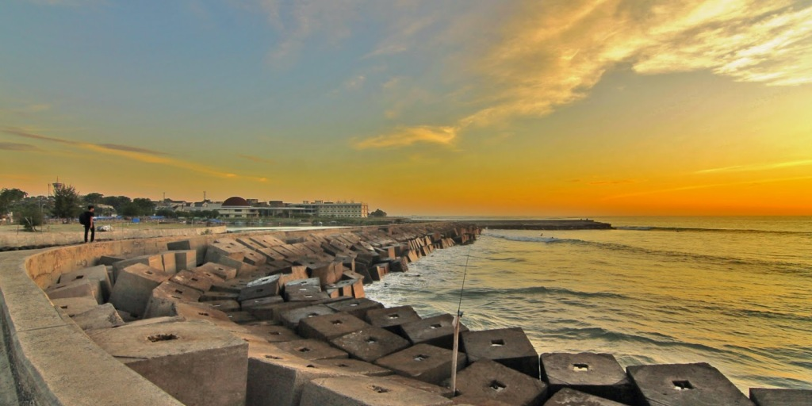

Pulau Sumatera

1. Danau Ranau - Sumatera Selatan
Kamu bisa mengikuti jalur lintas barat, karena danau nomor dua terbesar di Sumatera ini terletak di perbatasan Lampung barat dan Sumatera Selatan, tepatnya di kabupaten Ogan Komering Ulu (OKU) Selatan. Udaranya yang sejuk membuat betah berlama-lama di sana.

2. Pesisir Kalianda - Lampung
Dari pelabuhan Bakaheuni mengikuti jalur lintas barat Sumatera, kita bisa mampir ke pesisir Kalianda sebelum sampai di Bandar Lampung. Ada beberapa deretan pantai cantik yang terbentang di sepanjang Kalianda yaitu Tapak Kera, Kedu, Marina, Batu Lapis, Merak Belantun, Sebalang, dan lainnya. Semuanya memiliki panorama surgawi. Nampaknya perlu bermalam jika kita ingin menikmati pantai-pantai di Kalianda ini.

3. Danau Gunung Tujuh - Jambi
Danau Gunung Tujuh mendapat peringkat danau kedua tertinggi di dunia. Untuk mendakinya, kamu akan melewati perkebunan teh Kayu Aro, Desa Pelompek, Kabupaten Kerinci, Jambi. Kebun teh Kayu Aro tampak sangat indah dan luas. Sebagai yang terluas di Asia Tenggara, danau ini terletak di dalam kawasan Gunung Tujuh yang berada di balik Gunung Kerinci. Kamu gak bakal menyesal meluangkan waktu untuk mendaki dan bersantai di pinggir danau yang perairannya tenang dengan udara sejuk ini.

4. Pantai Panjang - Bengkulu
Merupakan pesisir pantai terpanjang di Indonesia yaitu sepanjang 7 kilometer. Di ujung pantai, kamu akan menemui Museum Benteng Fort Malborough yang sangat bersejarah.